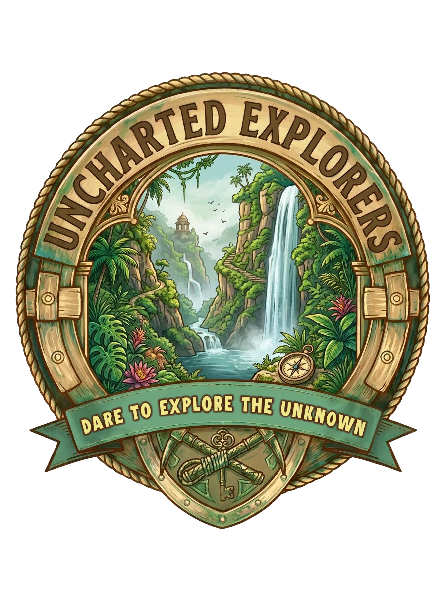

Digital Brochure


DARE TO EXPLORE THE UNKNOWN
Uncharted Explorers is a nature-focused guided exploration service dedicated to helping people experience the hidden beauty of Mauritius. Our vision is to inspire curiosity, adventure, and a deeper connection with the environment by guiding explorers to places that are often overlooked or unknown.
We pride ourselves on creating journeys that are safe, well-organized, and enriching, while fostering a spirit of discovery and appreciation for the natural world. Whether you’re a local seeking new experiences or a visitor eager to uncover the island’s secrets, Uncharted Explorers is here to lead the way.
From the green heart of Mauritius to its golden coastal edge | Join us for our next immersive adventure.
Our upcoming event bridges the gap between classroom learning and real-world exploration. By moving from the lush highlands to the vibrant shoreline, participants will discover the island’s geographic diversity while strengthening teamwork and connection.
Starting at Minissy Waterfall, explorers will trek scenic trails surrounded by tropical greenery. This stage emphasizes environmental appreciation and the importance of preserving Mauritius’s inland ecosystems.
The adventure continues at Albion Beach, famous for its rugged cliffs and historic lighthouse. Here, the focus shifts to teamwork and fun with activities like the Three-Legged Race, Treasure Hunt, and Water Relay — all designed to build bonds and test coordination.
Date: 16th April 2026
Location: Moka (Minissy Waterfall) & Albion Beach
Email: unchartedexplorers2026@gmail.com
Instagram: @uncharted_explorers_2026
Follow us on social media for updates!